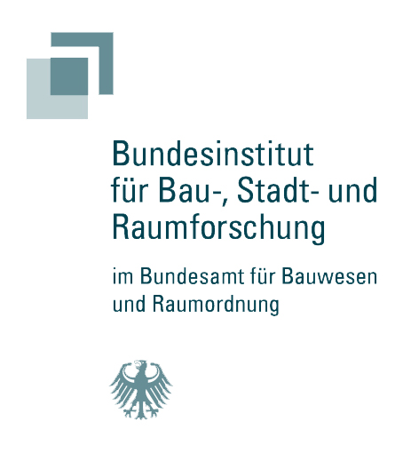

<section class="offcanvas-view offcanvas" tabindex="-1" id="offcanvasDocumentation" data-bs-backdrop="false" aria-labelledby="offcanvasDocumentationLabel">
  <div class="offcanvas-view__wrap">
    <h2 class="offcanvas-view__title" id="offcanvasDocumentationLabel">Dokumentation</h2>
    <div class="offcanvas-view__body">
      <p>StEmp-ABW ist ein Stakeholder-Empowerment-Tool für die Region Anhalt-Bitterfeld-Wittenberg (ABW). Es wurde vom Reiner Lemoine Institut (RLI) im Rahmen des Kopernikus-Projekts „ENavi“ entwickelt. Sie finden das Tool auf den WAM-Seiten des RLI.</p>
      <p>In dieser Dokumentation finden Sie methodische und technische Hintergrundinformationen und Anleitungen.</p>
      <p>Wollen Sie uns Rückmeldung geben? Hierfür können Sie gern unser Feedback-Formular verwenden.</p>
      <div class="offcanvas-view__logos">
        <div class="offcanvas-view__logo offcanvas-view__logo--rli">
          <a href="https://reiner-lemoine-institut.de/" target="_blank" rel="noopener noreferrer">
            
          </a>
        </div>
        <div class="offcanvas-view__logo offcanvas-view__logo--eaa">
          <a href="https://www.energieavantgarde.de/" target="_blank" rel="noopener noreferrer">
            
          </a>
        </div>
        <div class="offcanvas-view__logo offcanvas-view__logo--rg">
          <a href="https://www.region-gestalten.bund.de/" target="_blank" rel="noopener noreferrer">
            
          </a>
        </div>
      </div>
      <div class="offcanvas-view__logos">
        <div class="offcanvas-view__logo offcanvas-view__logo--bbsr">
          <a href="https://www.bbsr.bund.de/" target="_blank" rel="noopener noreferrer">
            
          </a>
        </div>
        <div class="offcanvas-view__logo offcanvas-view__logo--bmwsb">
          <a href="https://www.bmwsb.bund.de/" target="_blank" rel="noopener noreferrer">
            
          </a>
        </div>
        <div class="offcanvas-view__logo offcanvas-view__logo--bmi">
          <a href="https://www.bmi.bund.de/" target="_blank" rel="noopener noreferrer">
            
          </a>
        </div>
      </div>
    </div>
  </div>
</section>